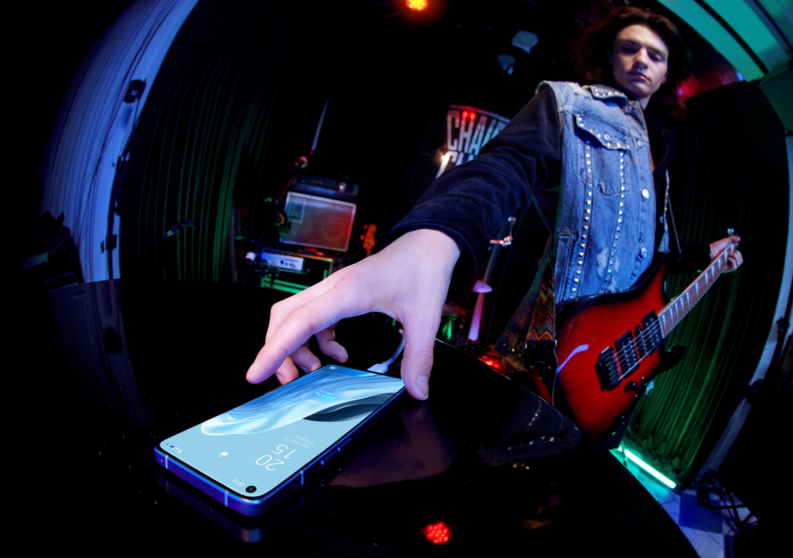

Environmental Problems
Environment is very good in this multiverse also i want some peoples here so that we can make the life extremely good using somme natural resorces in a good manner also we have to controll our population so that we can minimixe the dependence on the re................. this is my that we can make the life extremely good using somme natural resorces in a good manner also we have to tibus eum repudiandae delectus... this is my that we can make the life extremely good using somme natural resorces in a good manner also we have to tibus eum repudiandae delectus. Similique, vero maiores.